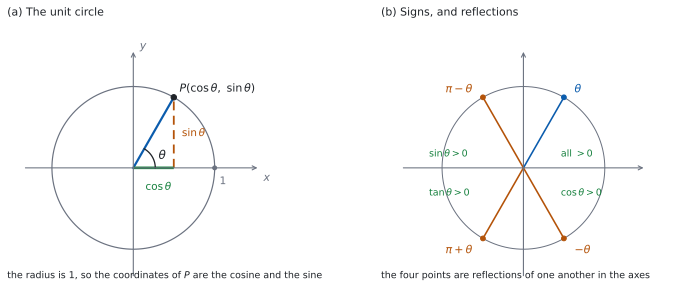

SL 3.5a — The unit circle definitions（単位円による定義）
- unit circle（単位円）の上の点の座標が \((\cos\theta,\ \sin\theta)\) であることを使える。
- \(\theta\) が鋭角でなくても（鈍角でも、負でも、\(2\pi\) より大きくても）、\(\cos\theta\) と \(\sin\theta\) が決まる理由が言える。
- \(\tan\theta = \dfrac{\sin\theta}{\cos\theta}\) の定義と、値をもたない角が言える。
- \(4\) つの quadrant（象限）での符号が言える。
- 折り返しから、\(\cos(-\theta)\)、\(\sin(\pi-\theta)\)、\(\tan(\pi+\theta)\) などを \(\theta\) の式で書ける。
- 原点を通る直線の式 \(y = x\tan\theta\) を使える。
The idea
1. 単位円
unit circle（単位円）は、原点を中心とする半径 \(1\) の円です。式で書けば \(x^{2}+y^{2}=1\) です。
角は、\(x\) 軸の正の向きから測ります。anticlockwise（反時計回り）が正、clockwise（時計回り）が負です。図 1 の (a) を見てください。
方位角（SL 3.3）とはちがい、北からでも時計回りでもありません。 ここで混ざりやすいので、気をつけてください。
2. \(\cos\theta\) と \(\sin\theta\) の定義
単位円の上で、角 \(\theta\) のところにある点を \(P\) とします。このとき
\[ P = (\cos\theta,\ \sin\theta) \tag{1}\]
と定めます。\(x\) 座標が \(\cos\theta\)、\(y\) 座標が \(\sin\theta\) です。
これは、直角三角形での定義（SL 3.2）を広げたものです。\(\theta\) が鋭角なら、\(2\) つは同じ値になります（Why it works）。ちがうのは、\(\theta\) が鋭角でなくても使えるところです。
- \(\theta\) が鈍角でも、点はあります。
- \(\theta\) が負でも、時計回りに測れば点はあります。
- \(\theta\) が \(2\pi\) より大きくても、何周かすればどこかの点に着きます。
点は円の上にあるので、座標は \(-1\) 以上 \(1\) 以下です。つまり
\[ -1 \le \cos\theta \le 1, \qquad -1 \le \sin\theta \le 1 \tag{2}\]
がすべての \(\theta\) で成り立ちます。
軸の上の \(4\) 点は、座標を読むだけです。
| \(\theta\) | \(0\) | \(\dfrac{\pi}{2}\) | \(\pi\) | \(\dfrac{3\pi}{2}\) |
|---|---|---|---|---|
| 点 | \((1,\ 0)\) | \((0,\ 1)\) | \((-1,\ 0)\) | \((0,\ -1)\) |
3. \(\tan\theta\) の定義
\(\tan\theta\) は、\(2\) つの座標の比として定めます。
\[ \tan\theta = \frac{\sin\theta}{\cos\theta} \tag{3}\]
公式集の 3.5 の欄に Identity for tanθ として印刷されています。
\(\tan\theta = \dfrac{\sin\theta}{\cos\theta}\)
分母が \(0\) のときは定まりません。 そこは公式集には書かれていないので、自分で気をつけます。
\(\cos\theta = 0\) になるのは、点が \(y\) 軸の上にあるとき、つまり \(\theta = \dfrac{\pi}{2}\)、\(\theta = \dfrac{3\pi}{2}\)、そしてそれらに \(2\pi\) の整数倍を足した角です。そこでは \(\tan\theta\) は定まりません。
\(\tan\theta\) は、原点と \(P\) を結ぶ直線の gradient（傾き）でもあります。\(P = (\cos\theta,\ \sin\theta)\) なので、傾きは \(\dfrac{\sin\theta - 0}{\cos\theta - 0}\) だからです。\(y\) 軸に平行な直線に傾きがないことと、\(\tan\dfrac{\pi}{2}\) が定まらないことは、同じことです。
4. 象限と符号
座標平面は \(4\) つの quadrant（象限）に分かれます。符号は、座標の符号を見るだけで決まります。
| 象限 | \(\theta\) の範囲 | \(\cos\theta\) | \(\sin\theta\) | \(\tan\theta\) |
|---|---|---|---|---|
| 第 \(1\) | \(0 < \theta < \dfrac{\pi}{2}\) | \(+\) | \(+\) | \(+\) |
| 第 \(2\) | \(\dfrac{\pi}{2} < \theta < \pi\) | \(-\) | \(+\) | \(-\) |
| 第 \(3\) | \(\pi < \theta < \dfrac{3\pi}{2}\) | \(-\) | \(-\) | \(+\) |
| 第 \(4\) | \(\dfrac{3\pi}{2} < \theta < 2\pi\) | \(+\) | \(-\) | \(-\) |
\(\tan\theta\) の符号は、\(2\) つの符号の割り算です。 第 \(3\) 象限で \(\tan\theta\) が正になるのは、負を負で割るからです。図 1 の (b) にまとめてあります。
5. 折り返しでできる関係
\(P\) を軸で折り返すと、別の角の点になります。座標の符号だけが変わるので、関係がそのまま読み取れます。
- \(x\) 軸で折り返す（\(\theta \to -\theta\)）… \((\cos\theta,\ -\sin\theta)\)
- \(y\) 軸で折り返す（\(\theta \to \pi-\theta\)）… \((-\cos\theta,\ \sin\theta)\)
- 原点で折り返す（\(\theta \to \pi+\theta\)）… \((-\cos\theta,\ -\sin\theta)\)
座標を読むと、次のようになります。
\[ \begin{aligned} \cos(-\theta) &= \cos\theta, & \sin(-\theta) &= -\sin\theta \\ \cos(\pi-\theta) &= -\cos\theta, & \sin(\pi-\theta) &= \sin\theta \\ \cos(\pi+\theta) &= -\cos\theta, & \sin(\pi+\theta) &= -\sin\theta \end{aligned} \tag{4}\]
\(\tan\) は、この \(2\) つの割り算です。\(\tan\theta\) が定まる角では
\[ \tan(-\theta) = -\tan\theta, \qquad \tan(\pi-\theta) = -\tan\theta, \qquad \tan(\pi+\theta) = \tan\theta \tag{5}\]
となります。
\(y\) 軸で折り返すと、\(\sin\) はそのまま、\(\cos\) は符号が変わります。\(2\) つを同じ扱いにしないでください。
どちらの座標が動くかを図で見れば、迷いません。
6. \(2\pi\) 回るともどる
角に \(2\pi\) を足すと、円をちょうど \(1\) 周して同じ点にもどります。だから
\[ \cos(\theta + 2\pi) = \cos\theta, \qquad \sin(\theta + 2\pi) = \sin\theta \tag{6}\]
です。\(2\pi\) の整数倍を足しても引いても同じです。
大きい角や負の角は、まず \(2\pi\) を足し引きして \(0\) 以上 \(2\pi\) 未満に直すと見やすくなります。
7. 原点を通る直線
原点を通り、\(x\) 軸の正の向きと角 \(\theta\) をなす直線を考えます。\(\theta\) に \(\pi\) を足しても同じ直線になるので、\(0 \le \theta < \pi\) の範囲で考えれば足ります。この範囲で
\[ y = x\tan\theta \tag{7}\]
と書けます（\(\theta \ne \dfrac{\pi}{2}\) のとき）。傾きが \(\tan\theta\) だということです。
たとえば \(\theta = \dfrac{\pi}{4}\) のときを見ます。\(\dfrac{\pi}{4}\) は \(0\) と \(\dfrac{\pi}{2}\) のちょうど真ん中なので、その点は \(2\) つの軸から等しい位置にあり、\(x\) 座標と \(y\) 座標が等しくなります（\(\dfrac{\pi}{4}\) は \(45°\) で、\(45°\) の直角三角形は二等辺です。SL 3.2、SL 3.4）。だから \(\tan\dfrac{\pi}{4} = 1\) で、直線は \(y = x\) です。
このページで使う正確な値は、軸の上の \(0\) と \(\pm 1\)、それに \(\tan\dfrac{\pi}{4} = 1\) だけです。 \(\dfrac{\pi}{6}\) や \(\dfrac{\pi}{3}\) のような角の正確な値は、次のページ SL 3.5b でまとめます。
\(\cos\theta = 0\) となる角（\(\theta = \dfrac{\pi}{2}\)、\(\dfrac{3\pi}{2}\)、…）では、直線は \(y\) 軸そのもの（\(x = 0\)）で、\(y = mx\) の形には書けません。
TI-Nspire で doc → Settings → Document Settings の Angle を Radian にしておけば、\(\cos\left(\dfrac{2\pi}{3}\right)\) のような値も、負号まで正しく出ます。
\(\tan\left(\dfrac{\pi}{2}\right)\) を入れると、undef（未定義）が返ります。 角を小数（\(1.5707963\) など）で入れた場合は、けた数の大きな数が返ることもあります。どちらも「値がない」ことの表れです。電卓の答えをそのまま書き写さないでください。
Paper 1 では使えません。 このページの例題と演習は、すべて手で解ける形にしてあります。

Why it works
なぜ、直角三角形の定義と同じになるのでしょうか。 \(\theta\) を鋭角とし、\(P\) から \(x\) 軸に垂線を下ろして、その足を \(H\) とします。
三角形 \(OPH\) は直角三角形で、斜辺 \(OP\) は半径なので \(1\) です。\(\theta\) から見ると、\(OH\) が隣辺、\(PH\) が対辺です。だから（SL 3.2）
\[ \cos\theta = \frac{OH}{1} = OH, \qquad \sin\theta = \frac{PH}{1} = PH \]
となり、\(OH\) と \(PH\) はそのまま \(P\) の座標の大きさです。半径を \(1\) にしたので、割り算が消えたわけです。
なぜ、鋭角でない角にも広げてよいのでしょうか。 半径 \(1\) の円では、角 \(\theta\) に対する弧の長さは \(l = r\theta = \theta\) です（SL 3.4）。だから \((1,\ 0)\) から弧を長さ \(|\theta|\) だけたどれば（\(\theta > 0\) なら反時計回り、\(\theta < 0\) なら時計回り）、着く点はちょうど \(1\) つに決まります。だから 式 1 は、どんな \(\theta\) に対しても値を \(1\) つ返します。
\(\theta\) と \(\theta + 2\pi\) のようにちがう角が同じ点になることはありますが、決めているのは「角から点へ」の向きなので、値が \(2\) つになることはありません。鋭角のところで前の定義と一致しているので、これは広げ方として筋が通っています。
なぜ、折り返しで符号だけが変わるのでしょうか。 \(x\) 軸での折り返しは、点 \((x,\ y)\) を \((x,\ -y)\) に写します。単位円は \(x\) 軸について対称なので、写った点も単位円の上にあります。
角のほうを見ると、\(x\) 軸で折り返すことは、回る向きを逆にすることです。つまり角 \(\theta\) の点は角 \(-\theta\) の点に写ります。この \(2\) つを合わせると、式 4 の \(1\) 行目になります。\(y\) 軸、原点についても同じです。
なぜ、原点を通る直線が \(y = x\tan\theta\) なのでしょうか。 その直線が単位円と交わる点の \(1\) つが \((\cos\theta,\ \sin\theta)\) です。原点とその点を通るので、傾きは
\[ \frac{\sin\theta - 0}{\cos\theta - 0} = \tan\theta \]
です。原点を通る傾き \(m\) の直線は \(y = mx\) ですから、\(y = x\tan\theta\) になります。\(\cos\theta = 0\) のときは傾きがなく、この形では書けません。
Worked examples
問題文は英語です。意味が理解できなかったら、問題文の下の「日本語訳」を開いてください。解説は日本語です。
例題も演習も、すべて電卓なしで解けます。 Paper 1 のつもりで解いてください。
例題 1 The point \(\mathrm{P}\) lies on the unit circle at an angle \(\theta\), measured anticlockwise from the positive \(x\)-axis.
(a) Write down the coordinates of \(\mathrm{P}\) when \(\theta = \pi\).
(b) Write down the value of \(\cos\dfrac{3\pi}{2}\) and the value of \(\sin\dfrac{3\pi}{2}\).
(c) Now let \(\theta\) be any angle, and suppose \(\mathrm{P}\) has coordinates \((a,\ b)\). Write down, in terms of \(a\) and \(b\), the coordinates of the point on the unit circle at angle \(\theta + \pi\).
(d) Explain why \(-1 \le \cos\theta \le 1\) for every angle \(\theta\).
日本語訳
点 \(\mathrm{P}\) は単位円の上にあり、\(x\) 軸の正の向きから反時計回りに測った角が \(\theta\) です。
(a) \(\theta = \pi\) のときの \(\mathrm{P}\) の座標を書きなさい。
(b) \(\cos\dfrac{3\pi}{2}\) の値と \(\sin\dfrac{3\pi}{2}\) の値を書きなさい。
(c) 今度は \(\theta\) をどんな角でもよいものとします。\(\mathrm{P}\) の座標が \((a,\ b)\) のとき、角 \(\theta + \pi\) にある単位円上の点の座標を、\(a\) と \(b\) で書きなさい。
(d) どんな角 \(\theta\) でも \(-1 \le \cos\theta \le 1\) になる理由を説明しなさい。
(a) \(\theta = \pi\) は半周なので、点は \(x\) 軸の負の側です（表 1）。
\[ \mathrm{P} = (-1,\ 0) \]
(b) \(\theta = \dfrac{3\pi}{2}\) は \(\dfrac{3}{4}\) 周で、点は \(y\) 軸の負の側 \((0,\ -1)\) です。座標を読みます。
\[ \cos\frac{3\pi}{2} = 0, \qquad \sin\frac{3\pi}{2} = -1 \]
(c) \(\pi\) を足すのは、原点で折り返すことです（第 5 節）。
\[ (-a,\ -b) \]
(d) Explain why なので、英語で理由を書きます。
試験ではこう書く
By definition \(\cos\theta\) is the \(x\)-coordinate of the point on the unit circle at angle \(\theta\). Every point on the unit circle satisfies \(x^{2}+y^{2}=1\), so \(x^{2} \le 1\) and therefore \(-1 \le x \le 1\). Hence \(-1 \le \cos\theta \le 1\) for every \(\theta\).
（定義により、\(\cos\theta\) は角 \(\theta\) にある単位円上の点の \(x\) 座標である。単位円上のどの点も \(x^{2}+y^{2}=1\) をみたすので \(x^{2} \le 1\)、したがって \(-1 \le x \le 1\) である。よってどんな \(\theta\) でも \(-1 \le \cos\theta \le 1\) である、という意味です。）
検算（(a) について）。 折り返して見ます。 \(\pi = 0 + \pi\) なので、\(\theta = 0\) の点 \((1,\ 0)\) を原点で折り返した点です。符号が変わって \((-1,\ 0)\) になり、そろっています ✓ 単位円の上にあることも \((-1)^{2}+0^{2} = 1\) から分かります。
検算（(b) について）。 符号の表で見ます。 \(\dfrac{3\pi}{2}\) は第 \(3\) 象限と第 \(4\) 象限の境目です。どちらでも \(\sin\theta\) は負なので、境目で \(-1\) になるのは筋が通っています ✓
検算（(c) について）。 \(2\) 回折り返します。 \((-a,\ -b)\) をもう一度原点で折り返すと \((a,\ b)\) にもどります。角のほうも \(\theta + 2\pi\) でもとにもどるので、合っています ✓
(a) \[\mathrm{P} = (-1,\ 0)\]
(b) \[\cos\frac{3\pi}{2} = 0, \qquad \sin\frac{3\pi}{2} = -1\]
(c) \[(-a,\ -b)\]
(d) \(\cos\theta\) is the \(x\)-coordinate of a point on \(x^{2}+y^{2}=1\), so \(x^{2} \le 1\) and \(-1 \le \cos\theta \le 1\).
例題 2 The angle \(\theta\) satisfies \(0 < \theta < \dfrac{\pi}{2}\). The point on the unit circle at angle \(\theta\) has coordinates \((a,\ b)\).
(a) Write down, in terms of \(a\) and \(b\), the coordinates of the point at angle \(\pi - \theta\).
(b) Write down, in terms of \(a\) and \(b\), the coordinates of the point at angle \(-\theta\).
(c) Hence write down \(\sin(\pi - \theta)\) and \(\cos(-\theta)\) in terms of \(\sin\theta\) and \(\cos\theta\).
(d) Explain why \(\tan(\pi - \theta) = -\tan\theta\).
日本語訳
角 \(\theta\) は \(0 < \theta < \dfrac{\pi}{2}\) をみたします。角 \(\theta\) にある単位円上の点の座標は \((a,\ b)\) です。
(a) 角 \(\pi - \theta\) にある点の座標を、\(a\) と \(b\) で書きなさい。
(b) 角 \(-\theta\) にある点の座標を、\(a\) と \(b\) で書きなさい。
(c) これらから、\(\sin(\pi - \theta)\) と \(\cos(-\theta)\) を \(\sin\theta\) と \(\cos\theta\) で書きなさい。
(d) \(\tan(\pi - \theta) = -\tan\theta\) になる理由を説明しなさい。
(a) \(\pi - \theta\) は、\(y\) 軸で折り返した角です（第 5 節）。\(x\) 座標だけ符号が変わります。
\[ (-a,\ b) \]
(b) \(-\theta\) は、\(x\) 軸で折り返した角です。\(y\) 座標だけ符号が変わります。
\[ (a,\ -b) \]
(c) \(a = \cos\theta\)、\(b = \sin\theta\) です。(a) の点の \(y\) 座標が \(\sin(\pi-\theta)\)、(b) の点の \(x\) 座標が \(\cos(-\theta)\) です。
\[ \sin(\pi-\theta) = b = \sin\theta, \qquad \cos(-\theta) = a = \cos\theta \]
(d) Explain why なので、英語で理由を書きます。
試験ではこう書く
The point at angle \(\pi - \theta\) is the reflection in the \(y\)-axis of the point at angle \(\theta\), so its coordinates are \((-\cos\theta,\ \sin\theta)\). Hence \(\cos(\pi-\theta) = -\cos\theta\) and \(\sin(\pi-\theta) = \sin\theta\). Since \(0 < \theta < \dfrac{\pi}{2}\) we have \(\cos\theta \neq 0\), so we may divide: \(\tan(\pi-\theta) = \dfrac{\sin\theta}{-\cos\theta} = -\tan\theta\).
（角 \(\pi-\theta\) の点は、角 \(\theta\) の点を \(y\) 軸で折り返したものなので、座標は \((-\cos\theta,\ \sin\theta)\) である。よって \(\cos(\pi-\theta) = -\cos\theta\)、\(\sin(\pi-\theta) = \sin\theta\) である。\(0 < \theta < \dfrac{\pi}{2}\) だから \(\cos\theta \neq 0\) で、割ってよい。したがって \(\tan(\pi-\theta) = -\tan\theta\) である、という意味です。）
検算（(a) について）。 象限で見ます。 \(0 < \theta < \dfrac{\pi}{2}\) なら \(\pi - \theta\) は第 \(2\) 象限です。第 \(2\) 象限では \(x\) 座標が負、\(y\) 座標が正なので、\((-a,\ b)\) と符号が合っています ✓
検算（(b) について）。 象限で見ます。 \(-\theta\) は第 \(4\) 象限で、\(x\) 座標が正、\(y\) 座標が負です。\((a,\ -b)\) と合っています ✓
検算（(d) について）。 符号の表で見ます。 \(\theta\) は第 \(1\) 象限なので \(\tan\theta > 0\)、\(\pi-\theta\) は第 \(2\) 象限なので \(\tan(\pi-\theta) < 0\) です。符号が反対になっていて、式 5 と食いちがいません ✓
(a) \[(-a,\ b)\]
(b) \[(a,\ -b)\]
(c) \[\sin(\pi-\theta) = \sin\theta, \qquad \cos(-\theta) = \cos\theta\]
(d) Reflecting in the \(y\)-axis gives \((-\cos\theta,\ \sin\theta)\), and \(\cos\theta \neq 0\), so \(\tan(\pi-\theta) = \dfrac{\sin\theta}{-\cos\theta} = -\tan\theta\).
例題 3 The line \(L\) passes through the origin and makes an angle \(\theta\) with the positive \(x\)-axis, measured anticlockwise, where \(0 \le \theta < \pi\).
(a) Explain why \(L\) has equation \(y = x\tan\theta\) whenever \(\theta \neq \dfrac{\pi}{2}\).
(b) \(L\) passes through the point \((4,\ 4)\). Write down the gradient of \(L\), and find \(\theta\).
(c) The line \(M\) passes through the origin and the point \((-3,\ 3)\). Write down the gradient of \(M\), and find the angle \(\theta\) it makes with the positive \(x\)-axis, where \(0 \le \theta < \pi\).
(d) Write down the equation of the line through the origin for which \(\theta = \dfrac{\pi}{2}\).
日本語訳
直線 \(L\) は原点を通り、\(x\) 軸の正の向きから反時計回りに測った角が \(\theta\) です。ただし \(0 \le \theta < \pi\) です。
(a) \(\theta \neq \dfrac{\pi}{2}\) のとき、\(L\) の式が \(y = x\tan\theta\) になる理由を説明しなさい。
(b) \(L\) は点 \((4,\ 4)\) を通ります。\(L\) の傾きを書き、\(\theta\) を求めなさい。
(c) 直線 \(M\) は原点と点 \((-3,\ 3)\) を通ります。\(M\) の傾きを書き、\(x\) 軸の正の向きとなす角 \(\theta\)（\(0 \le \theta < \pi\)）を求めなさい。
(d) \(\theta = \dfrac{\pi}{2}\) である、原点を通る直線の式を書きなさい。
(a) Explain why なので、英語で理由を書きます。
試験ではこう書く
The line through the origin at angle \(\theta\) passes through the point \((\cos\theta,\ \sin\theta)\) of the unit circle. Its gradient is therefore \(\dfrac{\sin\theta - 0}{\cos\theta - 0} = \tan\theta\), provided \(\cos\theta \neq 0\), which holds because \(\theta \neq \dfrac{\pi}{2}\) in \(0 \le \theta < \pi\). A line through the origin with gradient \(m\) has equation \(y = mx\), so \(L\) has equation \(y = x\tan\theta\).
（角 \(\theta\) で原点を通る直線は、単位円と点 \((\cos\theta,\ \sin\theta)\) で交わる。よって傾きは \(\dfrac{\sin\theta - 0}{\cos\theta - 0} = \tan\theta\) である。\(0 \le \theta < \pi\) で \(\theta \neq \dfrac{\pi}{2}\) だから \(\cos\theta \neq 0\) で、割ってよい。原点を通る傾き \(m\) の直線は \(y = mx\) なので、\(L\) は \(y = x\tan\theta\) である、という意味です。）
(b) 傾きは \(\dfrac{4-0}{4-0} = 1\) です。\(\tan\theta = 1\) となる \(\theta\) を、\(0 \le \theta < \pi\) で探します。\(\tan\dfrac{\pi}{4} = 1\)（\(45°\) の直角三角形は二等辺だからです）なので
\[ \theta = \frac{\pi}{4} \]
(c) 傾きは \(\dfrac{3-0}{-3-0} = -1\) です。傾きが負なので、\(\theta\) は第 \(2\) 象限の向き、つまり \(\dfrac{\pi}{2} < \theta < \pi\) です。\(\tan(\pi - \theta') = -\tan\theta'\)（式 5）で \(\tan\dfrac{\pi}{4} = 1\) ですから
\[ \theta = \pi - \frac{\pi}{4} = \frac{3\pi}{4} \]
(d) その直線は \(y\) 軸そのものです。
\[ x = 0 \]
検算（(b) について）。 式にもどします。 \(y = x\tan\dfrac{\pi}{4} = x\) に \(x = 4\) を入れると \(y = 4\) で、点 \((4,\ 4)\) を通ります ✓
検算（(c) について）。 単位円の点で見ます。 \(\dfrac{3\pi}{4}\) の点は第 \(2\) 象限で、\(x\) 座標が負、\(y\) 座標が正です。\((-3,\ 3)\) と符号が同じで、原点から見て同じ向きです ✓
検算（(d) について）。 傾きで見ます。 \(x = 0\) の上の点は \((0,\ 1)\) や \((0,\ -1)\) で、\(x\) 座標がどれも \(0\) です。\(y = mx\) の形では、\(x = 0\) のとき \(y = 0\) しか出せないので、この直線は書けません ✓
(a) The line passes through \((\cos\theta,\ \sin\theta)\), so its gradient is \(\tan\theta\); a line through the origin with gradient \(m\) is \(y = mx\).
(b) gradient \(= 1\), so \(\tan\theta = 1\) \[\theta = \frac{\pi}{4}\]
(c) gradient \(= -1\), and \(\dfrac{\pi}{2} < \theta < \pi\) \[\theta = \frac{3\pi}{4}\]
(d) \[x = 0\]
例題 4 In this question \(\theta\) is any angle.
(a) Write down, in terms of \(\cos\theta\) and \(\sin\theta\), the coordinates of the point on the unit circle at angle \(\theta + 2\pi\).
(b) Explain why \(\tan(\theta + \pi) = \tan\theta\) for every \(\theta\) at which \(\tan\theta\) is defined.
(c) Show that \(\tan(3\pi - \theta) = -\tan\theta\) whenever \(\tan\theta\) is defined.
(d) Write down \(\sin(\theta + 4\pi)\) in terms of \(\sin\theta\).
日本語訳
この問題では、\(\theta\) はどんな角でもよいものとします。
(a) 角 \(\theta + 2\pi\) にある単位円上の点の座標を、\(\cos\theta\) と \(\sin\theta\) で書きなさい。
(b) \(\tan\theta\) が定まるどの \(\theta\) でも \(\tan(\theta + \pi) = \tan\theta\) になる理由を説明しなさい。
(c) \(\tan\theta\) が定まるとき \(\tan(3\pi - \theta) = -\tan\theta\) であることを示しなさい。
(d) \(\sin(\theta + 4\pi)\) を \(\sin\theta\) で書きなさい。
(a) \(2\pi\) 足すのは \(1\) 周することなので、同じ点です（第 6 節）。
\[ (\cos\theta,\ \sin\theta) \]
(b) Explain why なので、英語で理由を書きます。
試験ではこう書く
Adding \(\pi\) reflects the point in the origin, so the point at angle \(\theta + \pi\) is \((-\cos\theta,\ -\sin\theta)\). Hence \(\cos(\theta+\pi) = -\cos\theta\) and \(\sin(\theta+\pi) = -\sin\theta\). Because \(\tan\theta\) is defined, \(\cos\theta \neq 0\), so \(\cos(\theta+\pi) \neq 0\) and we may divide: \(\tan(\theta+\pi) = \dfrac{-\sin\theta}{-\cos\theta} = \tan\theta\).
（\(\pi\) を足すことは原点で折り返すことなので、角 \(\theta + \pi\) の点は \((-\cos\theta,\ -\sin\theta)\) である。よって \(\cos(\theta+\pi) = -\cos\theta\)、\(\sin(\theta+\pi) = -\sin\theta\) である。\(\tan\theta\) が定まるので \(\cos\theta \neq 0\)、したがって \(\cos(\theta+\pi) \neq 0\) で割ってよく、\(\tan(\theta+\pi) = \tan\theta\) となる、という意味です。）
(c) Show that なので、つなぐ過程を書きます。 \(3\pi - \theta = (\pi - \theta) + 2\pi\) です。\(2\pi\) は \(1\) 周で点が同じなので、\(\cos\) も \(\sin\) も変わらず（式 6）、その比である \(\tan\) も変わりません。
\[ \tan(3\pi - \theta) = \tan(\pi - \theta) = -\tan\theta \]
最後の等号は 式 5 です。
(d) \(4\pi\) は \(2\) 周です。
\[ \sin(\theta + 4\pi) = \sin\theta \]
検算（(b) について）。 象限で見ます。 \(\theta\) が第 \(1\) 象限なら \(\theta + \pi\) は第 \(3\) 象限で、どちらも \(\tan\) は正です。\(\theta\) が第 \(2\) 象限なら \(\theta + \pi\) は第 \(4\) 象限で、どちらも負です ✓ 符号が食いちがう組はありません。
検算（(c) について）。 座標で確かめます。 \(3\pi - \theta\) の点は、\(1\) 周ぶんを落とせば \(\pi - \theta\) の点、つまり \((-\cos\theta,\ \sin\theta)\) です。比を取ると \(\dfrac{\sin\theta}{-\cos\theta} = -\tan\theta\) ✓
検算（(d) について）。 \(2\) 段に分けます。 \(\sin(\theta + 4\pi) = \sin((\theta + 2\pi) + 2\pi) = \sin(\theta + 2\pi) = \sin\theta\) ✓ 式 6 を \(2\) 回使いました。
(a) \[(\cos\theta,\ \sin\theta)\]
(b) Adding \(\pi\) gives \((-\cos\theta,\ -\sin\theta)\), and \(\cos\theta \neq 0\), so \(\tan(\theta+\pi) = \dfrac{-\sin\theta}{-\cos\theta} = \tan\theta\).
(c) \(3\pi - \theta = (\pi - \theta) + 2\pi\) \[\tan(3\pi-\theta) = \tan(\pi-\theta) = -\tan\theta\]
(d) \[\sin(\theta + 4\pi) = \sin\theta\]
Common errors
単位円の角は、\(x\) 軸の正の向きから反時計回りです（第 1 節）。方位角とは測り方がちがいます。
第 \(2\) 象限では \(x\) 座標が負なので、\(\cos\theta\) は負です（第 4 節）。座標の符号を見れば決まります。
\(\cos\dfrac{\pi}{2} = 0\) なので、\(\tan\dfrac{\pi}{2}\) は定まりません（第 3 節）。電卓が undef や大きな数を返しても、それは値ではありません。
\(\sin\) は変わらず、\(\cos\) は符号が変わります（式 4）。
単位円では、どちら向きにも、何周でも回れます（第 6 節）。\(2\pi\) を足し引きして直してください。
傾きは \(\tan\theta\) であって、\(\theta\) ではありません（第 7 節）。
Exercises
各問題に、折りたたみが \(3\) つ付いています。日本語訳、解答例（答案用紙に書くべきこと。英語です）、解説（なぜそうなるか。日本語です）。
まず自分で解いて、次に解答例と見くらべてください。解説は、合わなかったときだけ開けば十分です。
1 Explain why \(\cos\theta\) and \(\sin\theta\) have a value for every angle \(\theta\), including angles greater than \(2\pi\) and negative angles.
日本語訳
\(2\pi\) より大きい角や負の角もふくめて、どんな角 \(\theta\) でも \(\cos\theta\) と \(\sin\theta\) に値がある理由を説明しなさい。
Measuring \(\theta\) from the positive \(x\)-axis reaches exactly one point of the unit circle, so \(\cos\theta\) and \(\sin\theta\) are defined as its coordinates.
Explain why なので、「角を測ると点が \(1\) つ決まる」ことを根拠として書きます（第 2 節）。向きの決め方（正なら反時計回り、負なら時計回り）にもふれます。
検算。 大きい角でためします。 \(\theta = \dfrac{9\pi}{2}\) から \(2\pi\) を \(2\) 回引くと \(\dfrac{\pi}{2}\) で、点は \((0,\ 1)\) です。\(2\) 周ぶん回っても、行き先は \(1\) つに決まりました ✓
試験ではこう書く
Measure \(\theta\) from the positive \(x\)-axis, anticlockwise if \(\theta > 0\) and clockwise if \(\theta < 0\). However large \(|\theta|\) is, this reaches exactly one point of the unit circle, because each extra turn of \(2\pi\) returns to the same point. By definition \(\cos\theta\) and \(\sin\theta\) are the coordinates of that point, so both have a value for every \(\theta\).
2 Write down the value of \(\tan\pi\).
日本語訳
\(\tan\pi\) の値を書きなさい。
\[\tan\pi = \frac{0}{-1} = 0\]
3 The angle \(\theta\) lies in the second quadrant. Write down the sign of \(\cos\theta\), the sign of \(\sin\theta\) and the sign of \(\tan\theta\).
日本語訳
角 \(\theta\) は第 \(2\) 象限にあります。\(\cos\theta\)、\(\sin\theta\)、\(\tan\theta\) のそれぞれの符号を書きなさい。
\[\cos\theta < 0, \qquad \sin\theta > 0, \qquad \tan\theta < 0\]
第 \(2\) 象限では \(x\) 座標が負、\(y\) 座標が正です（表 2）。
検算。 割り算で見ます。 \(\tan\theta = \dfrac{\sin\theta}{\cos\theta}\) で、正を負で割るので負です ✓ 符号を別々に覚える必要はありません。
\(\tan\theta\) だけ落とさないでください。 \(3\) つとも聞かれています。
4 The point on the unit circle at angle \(\theta\) has coordinates \((p,\ q)\). Write down the coordinates of the point at angle \(-\theta\), and hence write down \(\sin(-\theta)\) in terms of \(\sin\theta\).
日本語訳
角 \(\theta\) にある単位円上の点の座標が \((p,\ q)\) です。角 \(-\theta\) にある点の座標を書き、それをもとに \(\sin(-\theta)\) を \(\sin\theta\) で書きなさい。
\[(p,\ -q)\]
\[\sin(-\theta) = -\sin\theta\]
\(-\theta\) は \(x\) 軸で折り返した角なので、\(y\) 座標だけ符号が変わります（第 5 節）。
検算。 \(2\) 回折り返します。 \((p,\ -q)\) をもう一度 \(x\) 軸で折り返すと \((p,\ q)\) にもどり、角も \(-(-\theta) = \theta\) にもどります ✓
\(\cos\) まで符号を変えないでください。 \(x\) 座標は動きません。
5 A line passes through the origin and the point \((-5,\ -5)\). Write down the gradient of the line, and find the angle \(\theta\) it makes with the positive \(x\)-axis, where \(0 \le \theta < \pi\).
日本語訳
原点と点 \((-5,\ -5)\) を通る直線があります。この直線の傾きを書き、\(x\) 軸の正の向きとなす角 \(\theta\)（\(0 \le \theta < \pi\)）を求めなさい。
gradient \(= \dfrac{-5}{-5} = 1\), so \(\tan\theta = 1\)
\[\theta = \frac{\pi}{4}\]
傾きが \(\tan\theta\) です（式 7）。点が第 \(3\) 象限にあっても、直線は同じです。\(\theta\) に \(\pi\) を足しても直線は変わらないので、\(0 \le \theta < \pi\) の範囲では \(\dfrac{\pi}{4}\) になります（第 7 節）。
検算。 原点で折り返して見ます。 \(\dfrac{\pi}{4}\) の点を原点で折り返した点も、同じ直線の上にあります。\((-5,\ -5)\) は \(x\) と \(y\) が等しく、どちらも負なので、その向きです ✓
\(\dfrac{5\pi}{4}\) と答えないでください。 範囲は \(0 \le \theta < \pi\) です。
6 Write down \(\cos(\theta + 2\pi)\) in terms of \(\cos\theta\).
日本語訳
\(\cos(\theta + 2\pi)\) を \(\cos\theta\) で書きなさい。
\[\cos(\theta + 2\pi) = \cos\theta\]
\(2\pi\) 足すと \(1\) 周してもとの点にもどるので、座標が変わりません（式 6）。
検算。 軸の上の点でためします。 \(\theta = 0\) なら \(\cos 2\pi\) で、\(2\pi\) の点は \((1,\ 0)\) ですから \(1\) です。\(\cos 0 = 1\) とそろっています ✓
\(\cos\theta + 2\pi\) と読まないでください。 \(2\pi\) は角のほうに足します。
7 Explain why \(\tan\theta\) is not defined when \(\theta = \dfrac{\pi}{2}\), and write down all the angles \(\theta\) with \(0 \le \theta < 4\pi\) at which \(\tan\theta\) is not defined.
日本語訳
\(\theta = \dfrac{\pi}{2}\) のとき \(\tan\theta\) が定まらない理由を説明し、\(0 \le \theta < 4\pi\) のうち \(\tan\theta\) が定まらない角をすべて書きなさい。
At \(\theta = \dfrac{\pi}{2}\) the point on the unit circle is \((0,\ 1)\), so \(\cos\dfrac{\pi}{2} = 0\). Since \(\tan\theta = \dfrac{\sin\theta}{\cos\theta}\), this would require division by zero.
\[\theta = \frac{\pi}{2},\ \frac{3\pi}{2},\ \frac{5\pi}{2},\ \frac{7\pi}{2}\]
Explain why なので、\(\cos\dfrac{\pi}{2} = 0\) を根拠として書きます（第 3 節）。
検算。 傾きでも見ます。 原点と \((0,\ 1)\) を結ぶ直線は \(y\) 軸で、傾きがありません。\(\tan\theta\) が傾きだったことと、そろっています ✓
検算（角の並びについて）。 \(\pi\) ずつ増えるか見ます。 点が \(y\) 軸に来るのは半周ごとなので、\(\dfrac{\pi}{2}\) から \(\pi\) ずつ足していけばすべて出ます。\(4\pi\) の手前で止めると \(\dfrac{7\pi}{2}\) までで、\(4\) 個です ✓
試験ではこう書く
By definition, \(\tan\theta = \dfrac{\sin\theta}{\cos\theta}\). The point on the unit circle at \(\theta = \dfrac{\pi}{2}\) is \((0,\ 1)\), so \(\cos\dfrac{\pi}{2} = 0\) and \(\sin\dfrac{\pi}{2} = 1\). The quotient \(\dfrac{1}{0}\) has no value, so \(\tan\dfrac{\pi}{2}\) is not defined. Equivalently, the line through the origin at this angle is the \(y\)-axis, which has no gradient.
8 Show that \(\sin(2\pi - \theta) = -\sin\theta\).
日本語訳
\(\sin(2\pi - \theta) = -\sin\theta\) を示しなさい。
\(2\pi - \theta = -\theta + 2\pi\)
\[\sin(2\pi - \theta) = \sin(-\theta) = -\sin\theta\]
9 A line passes through the origin and has negative gradient. The angle it makes with the positive \(x\)-axis is \(\theta\), where \(0 \le \theta < \pi\). Explain why \(\dfrac{\pi}{2} < \theta < \pi\).
日本語訳
原点を通り、傾きが負である直線があります。\(x\) 軸の正の向きとなす角を \(\theta\)（\(0 \le \theta < \pi\)）とします。\(\dfrac{\pi}{2} < \theta < \pi\) である理由を説明しなさい。
The gradient is \(\tan\theta\), so \(\tan\theta < 0\). For \(0 \le \theta < \dfrac{\pi}{2}\) we have \(\tan\theta \ge 0\), since \(\tan 0 = 0\) and \(\tan\theta > 0\) in the first quadrant; and \(\tan\dfrac{\pi}{2}\) is undefined. So \(\tan\theta < 0\) forces \(\dfrac{\pi}{2} < \theta < \pi\).
Explain why なので、場合を分けて書きます。\(0 \le \theta < \pi\) を \(\theta = 0\)・第 \(1\) 象限・\(\theta = \dfrac{\pi}{2}\)・第 \(2\) 象限の \(4\) つに分けます。\(\theta = 0\) の点は \((1,\ 0)\) なので \(\tan 0 = \dfrac{0}{1} = 0\)、第 \(1\) 象限と第 \(2\) 象限は 表 2 です。
検算。 具体例で見ます。 傾き \(-1\) の直線は \((-1,\ 1)\) を通り、この点は第 \(2\) 象限です。原点から見た向きは \(\dfrac{\pi}{2}\) と \(\pi\) のあいだにあります ✓
試験ではこう書く
The gradient of a line through the origin at angle \(\theta\) is \(\tan\theta\), so here \(\tan\theta < 0\). At \(\theta = 0\) the point is \((1,\ 0)\), so \(\tan 0 = 0\). For \(0 < \theta < \dfrac{\pi}{2}\) both coordinates are positive, so \(\tan\theta > 0\). At \(\theta = \dfrac{\pi}{2}\) the tangent is undefined. For \(\dfrac{\pi}{2} < \theta < \pi\) the \(x\)-coordinate is negative and the \(y\)-coordinate is positive, so \(\tan\theta < 0\). Only this last case gives a negative gradient, so \(\dfrac{\pi}{2} < \theta < \pi\).
10 A student writes: “Since \(\sin(\pi + \theta) = -\sin\theta\) and \(\cos(\pi + \theta) = -\cos\theta\), it follows that \(\tan(\pi + \theta) = -\tan\theta\).” Identify the error, and write down the correct relation.
日本語訳
ある生徒が「\(\sin(\pi + \theta) = -\sin\theta\) かつ \(\cos(\pi + \theta) = -\cos\theta\) なので、\(\tan(\pi + \theta) = -\tan\theta\) である」と書きました。誤りを指摘し、正しい関係を書きなさい。
The two minus signs are in a quotient, not a sum, so they cancel.
\[\tan(\pi+\theta) = \frac{-\sin\theta}{-\cos\theta} = \tan\theta\]
Identify the error なので、どこが違うのかを名指ししてから、正しい答えを書きます。\(2\) つの式は正しく、まちがっているのはそのあとの割り算です。
検算。 象限で見ます。 \(\theta\) が第 \(1\) 象限なら \(\pi + \theta\) は第 \(3\) 象限で、どちらも \(\tan\) は正です（表 2）。符号が反対になる組はありません ✓ 生徒の言うとおりなら、正が負にならなければいけません。
試験ではこう書く
Both of the student’s first two statements are correct, but the error is in combining them. Since \(\tan(\pi+\theta) = \dfrac{\sin(\pi+\theta)}{\cos(\pi+\theta)}\), the two negative signs appear in a quotient and cancel, giving \(\dfrac{-\sin\theta}{-\cos\theta} = \dfrac{\sin\theta}{\cos\theta}\). The correct relation is \(\tan(\pi+\theta) = \tan\theta\), valid whenever \(\cos\theta \neq 0\).